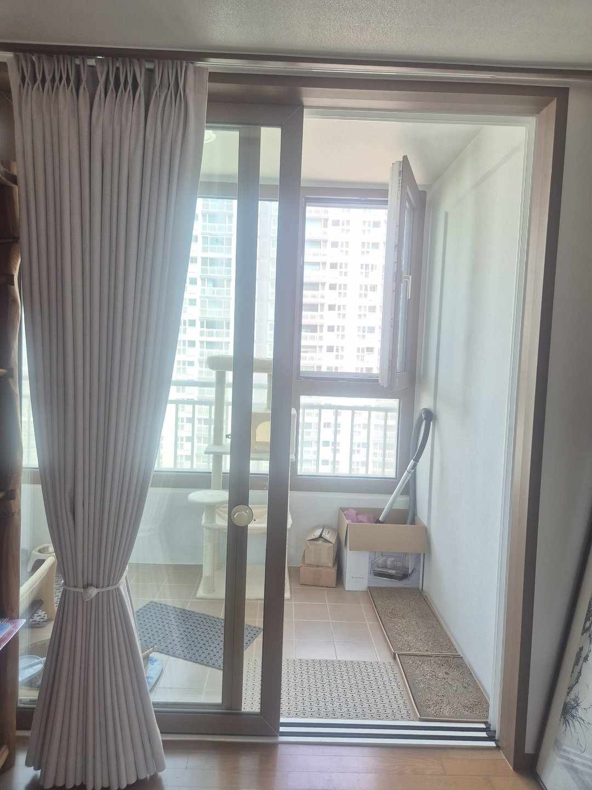
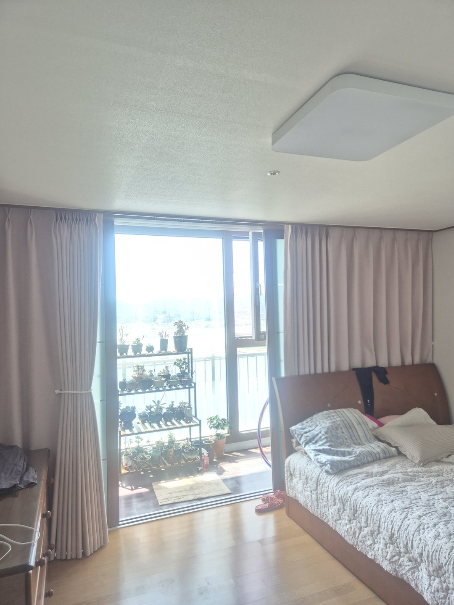
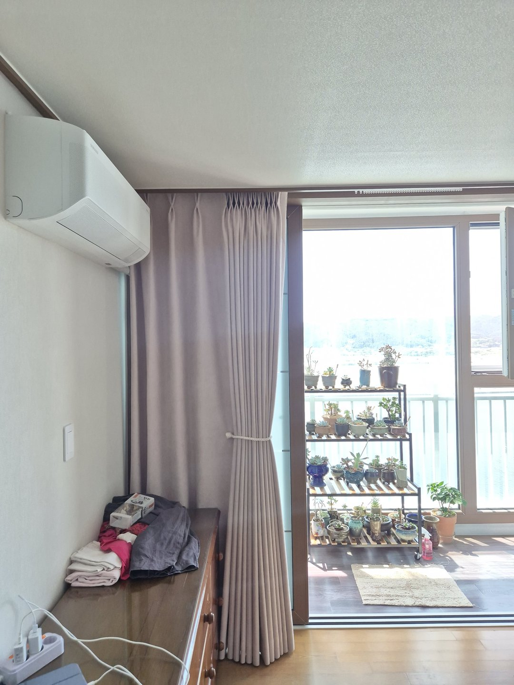
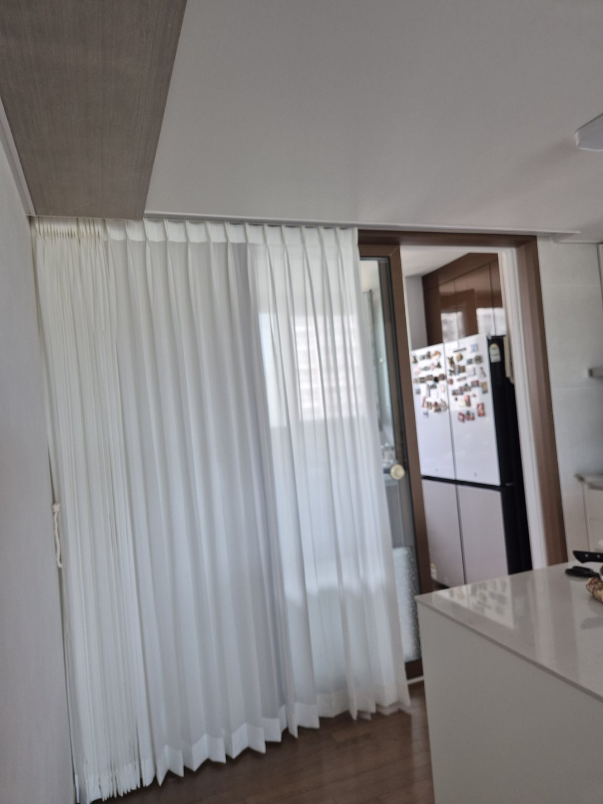

2026년 7월 31일 시공
포항 효자 SK뷰 1차아파트
인디언핑크 암막커튼 시공후기

포항 효자동 SK뷰 1차아파트 커튼 시공입니다. 거실과 안방, 작은방을 인디언핑크 100% 암막커튼으로 통일하고 주방만 화이트 쉬폰으로 따로 갔습니다.
이 집은 상담 때 색 이야기로 제일 오래 붙잡고 있었습니다. 사장님이 처음 하신 말씀이 "집 전체를 한 색으로 하고 싶다"였는데, 고르신 색이 핑크였습니다.
솔직히 한 번 더 여쭤봤습니다
방 하나면 몰라도 거실까지 핑크로 가면 집이 어려 보이지 않겠냐고 다시 여쭤봤습니다. 커튼은 벽 한 면을 통째로 차지하는 물건이라 색을 잘못 고르면 가구를 아무리 잘 놔도 그 인상이 안 지워집니다.
그런데 실측하러 가서 집을 보고 생각이 바뀌었습니다. 바닥이 원목이고 문틀과 창틀이 진한 갈색인 집이었습니다. 여기서 중요한 건 "핑크냐 아니냐"가 아니라 "어떤 핑크냐"였습니다.
맑은 분홍과 회색 섞인 분홍은 완전히 다릅니다
맑고 채도가 높은 분홍은 나무색 옆에 놓이면 튑니다. 서로 계열이 다르니까 눈이 두 색을 따로따로 인식합니다. 그러면 방이 정리가 안 된 느낌이 납니다.
반면 인디언핑크처럼 회색이 섞여 톤이 내려간 분홍은 나무색과 같은 편이 됩니다. 둘 다 따뜻한 계열이고 채도가 비슷해서 하나의 덩어리로 읽힙니다. 실제로 커튼을 달아놓고 보면 분홍이라는 느낌보다 "나무색이랑 잘 붙는 차분한 색"으로 보입니다.

거실·안방·작은방을 같은 색으로 묶었습니다
색을 통일하면 답답해진다고들 하십니다. 저희 경험은 반대입니다. 답답해지는 건 색이 여러 개일 때입니다.
집 안을 걸어 다니면서 문을 열고 방으로 넘어갈 때, 창 쪽 색이 계속 바뀌면 시선이 구간마다 끊깁니다. 끊긴 구간이 많을수록 각 공간이 작게 인식됩니다. 반대로 창 색이 이어지면 시선이 한 번에 쭉 흐르면서 집이 실제 평수보다 넓게 읽힙니다.
특히 이 집처럼 거실과 방이 한 복도로 이어지는 구조에서는 효과가 큽니다. 방문을 열어두면 커튼 색이 연결돼서 하나의 공간처럼 보입니다.

100% 암막인데 색이 밝아도 되나요
상담 때 가장 많이 받는 질문입니다. 결론부터 말씀드리면 상관없습니다.
암막 원단은 겉으로 보이는 색이 빛을 막는 게 아닙니다. 원단 안쪽에 들어간 차광 코팅이 막습니다. 그래서 같은 등급의 암막이라면 검정이든 아이보리든 인디언핑크든 차광 성능은 거의 같습니다.
오히려 실제로 방이 어두워지느냐는 원단보다 시공 쪽에서 갈립니다. 커튼 폭이 창보다 넉넉해야 옆으로 새는 빛이 잡히고, 봉을 창틀 위로 충분히 올려 달아야 위쪽 틈이 막힙니다. 새벽에 눈이 떠지는 집은 대부분 원단이 아니라 이 위쪽 틈 때문입니다.

발코니가 분리된 구조라 신경 쓴 것
이 집은 발코니를 확장하지 않은 구조입니다. 그래서 커튼이 발코니 문 바로 앞에 서게 됩니다. 확장한 집과는 다른 문제가 하나 생깁니다.
문을 여닫을 때마다 원단이 문틀에 끼거나 쓸립니다. 매일 여닫는 자리라 몇 달 지나면 그 부분만 눌리고 상합니다. 그래서 봉을 문틀에서 앞으로 조금 더 띄워 달고, 묶음 위치도 문 손잡이보다 위로 잡았습니다. 이렇게 하면 커튼을 묶어둔 상태에서 문을 여닫아도 원단이 걸리지 않습니다.


주방만 흰색으로 뺀 이유
집 전체를 통일했다고 했는데 주방은 예외였습니다. 이유가 세 가지입니다.
첫째, 조리하는 자리는 어두우면 안 됩니다. 칼을 쓰고 불을 쓰는 공간이라 밝기가 안전과 직결됩니다. 여기에 암막을 달면 낮에도 불을 켜야 합니다.
둘째, 세탁 주기가 다릅니다. 주방 커튼은 기름과 음식 냄새가 붙어서 다른 방보다 훨씬 자주 빨게 됩니다. 두껍고 코팅이 들어간 암막 원단은 자주 세탁하기에 무겁고 관리가 번거롭습니다. 얇은 쉬폰은 세탁기에 그냥 돌려서 널면 됩니다.
셋째, 주방 창은 대부분 크지 않고 시선 차단만 되면 충분합니다. 완전 차광이 필요한 자리가 아닙니다.

시공 정보
지역 : 경상북도 포항시 남구 효자동 (SK뷰 1차아파트)
공간 : 거실 · 안방 · 작은방 · 주방
제품 : 인디언핑크 100% 암막커튼 (거실·안방·작은방) / 화이트 쉬폰커튼 (주방)
포인트 : 나무색과 같은 계열로 톤 맞추기 / 세 공간 색 통일 / 발코니 문 간섭 회피 / 주방만 밝기·세탁 기준으로 분리
작업 시간 : 1일
시공일 : 2026년 7월 31일
자주 묻는 질문
Q. 집 전체를 한 색으로 하면 답답하지 않나요?
오히려 반대인 경우가 많습니다. 창 색이 이어지면 시선이 끊기지 않아 집이 넓게 읽힙니다. 답답해 보이는 건 색이 여러 개로 잘려 있을 때입니다. 다만 색 자체가 어둡고 채도가 높으면 그건 별개 문제라 톤 선택이 중요합니다.
Q. 커튼 색은 뭘 기준으로 고르나요?
바닥과 문틀·창틀 색을 먼저 봅니다. 그 나무색과 같은 계열로 맞추면 실패가 적습니다. 색 이름보다 채도가 중요하고, 톤이 내려간 색일수록 안전합니다.
Q. 밝은 색 암막도 정말 어두워지나요?
네. 빛은 원단 안쪽 차광 코팅이 막습니다. 겉색과 무관합니다. 다만 커튼 폭이 창보다 넉넉해야 하고 봉을 창 위로 올려 달아야 옆·위 빛샘이 잡힙니다.
Q. 주방에도 암막을 다는 게 좋을까요?
권하지 않습니다. 조리 공간은 밝아야 하고, 기름 때문에 자주 세탁하게 됩니다. 시선 차단이 목적이면 얇은 쉬폰이나 가벼운 원단이 맞습니다.
Q. 발코니를 확장하지 않은 집도 커튼 시공되나요?
됩니다. 다만 커튼이 발코니 문 앞에 서기 때문에 문을 여닫을 때 원단이 끼지 않도록 봉 위치와 묶음 높이를 따로 잡습니다. 실측 때 문 여닫는 방향을 확인합니다.
Q. 포항 효자동도 방문 시공 되나요?
됩니다. 포항, 경주, 안동, 영천, 영주, 의성, 예천, 문경, 상주, 울진 일대는 따솜커튼블라인드 이실장(010-2825-7275)이 직접 방문해 실측하고 시공합니다.
마무리
커튼 색은 취향 문제처럼 보이지만 실제로는 집이 얼마나 넓어 보이는지, 얼마나 정리돼 보이는지를 결정합니다. 그리고 그 판단 기준은 유행하는 색이 아니라 그 집에 이미 깔려 있는 나무색입니다.
핑크로 집 전체를 가겠다고 하셨을 때 저희가 말렸다면 이 집은 지금 모습이 안 나왔을 겁니다. 색 이름만 듣고 판단하지 않기를 잘했습니다.
비슷한 시공이 필요하신가요?
창 전체가 나오게 찍은 사진 한 장 주시면 방문 전에 견적을 알려드립니다.
색 고민 중이시라면 바닥과 문틀이 같이 나오게 찍어주시면 톤까지 봐드립니다.